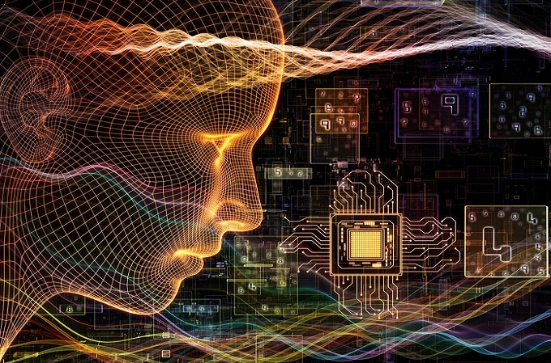

OrigenUna de las corrientes más importantes es la de la computación cuántica. La idea de la computación cuántica fue introducida por primera vez en 1982, por Richard Feynman (premio Nobel de Física en 1965), cuando consideró la simulación de sistemas en mecánica cuántica por otros sistemas cuánticos. |
|
|  |
HistoriaLa idea de la computación cuántica fue introducida por primera vez en 1982, por Richard Feynman (premio Nobel de Física en 1965), cuando consideró la simulación de sistemas en mecánica cuántica por otros sistemas cuánticos. |
ObjetivoLa investigación en computación cuántica estudia los límites físicos del procesamiento de la información y está abriendo nuevos caminos en la física fundamental. Esta investigación conduce a avances en muchos campos de la ciencia y la industria, como la química, la optimización y la simulación molecular. |
|
Influencia en la sociedadBueno este influye a favor ya que en el área de salud ya que se podrían descubrir nuevas medicinas y materiales para su uso clínico. No solo eso, sino que además impulsaría el aprendizaje automático cuando existe un gran flujo de datos e imágenes médicas. Y otra de las grandes posibilidades que aporta es el desarrollo de la seguridad. |
|
Futuro de la computación cuánticaos investigadores están trabajando para desarrollar computadoras cuánticas más avanzadas que puedan escalar a tamaños más grandes y realizar cálculos más complejos. Además, se están desarrollando nuevos algoritmos cuánticos que pueden aprovechar las propiedades únicas de los qubits. |